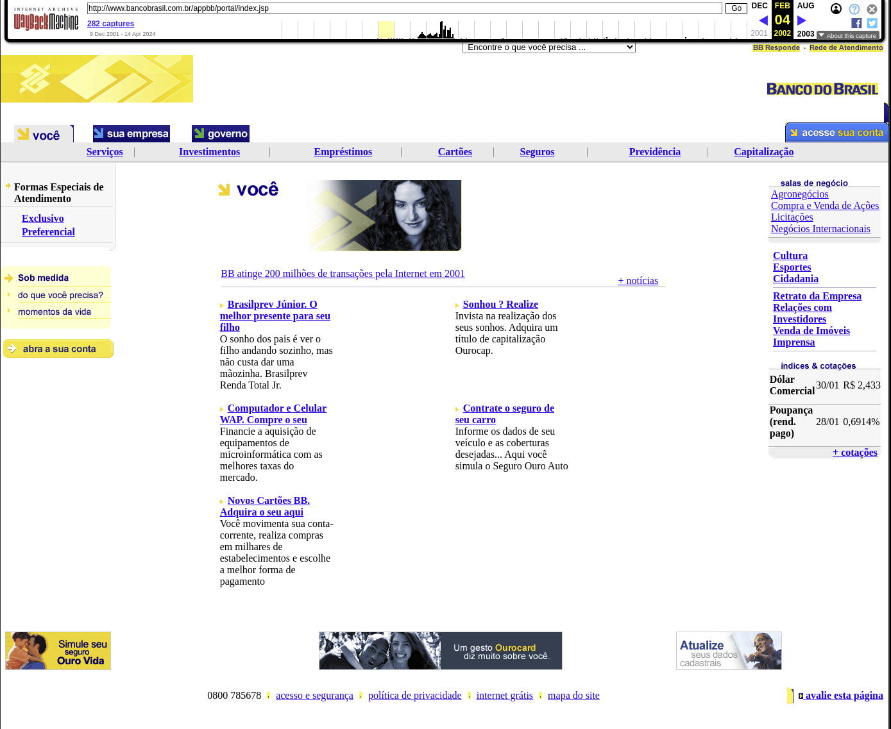

Disciplinas
-
FUNDAMENTOS DE WEB Concluído
Materiais
Wayback Machine é um banco de dados digital criado pela organização sem fins lucrativos Internet Archive e que arquiva mais de 771 bilhões de páginas da World Wide Web desde 1996 (“Internet Archive: Wayback Machine”, 2022). O Internet Archive proporciona de forma gratuita a possibilidade de visualizar versões arquivadas (tal como eram no passado) de páginas de um website.
O nome Wayback Machine [Máquina do Tempo] foi escolhido como referência a um dispositivo fictício de viagem no tempo, o "Wayback Machine", usado pelos personagens Mister Peabody e Sherman no desenho animado The Rocky and Bullwinkle Show, dos anos 1960.
Conteúdo
Usarei a máquina do tempo para trazer um trabalho realizado em minha época de graduando no qual fizemos artigos para o extinto Knol, do Google, que funcionava como uma espécie de enciclopédia digital e esteve no ar entre 2008 a 2012. O trabalho falava sobre a internet de maneira geral e como se desenvolveu no Brasil (SILVA, 2011):
“[...]A Internet derivou da difusão da ampla tecnologia para se implantar uma rede de computadores no final da década de 60, no início essa tecnologia incorporou características de interesse militar americano, já que se tratava do período da Guerra Fria, tais como:
Flexibilidade da arquitetura;
Ausência de nodo central;
Redundância de conexões e funções;
Capacidade de reconfiguração dinâmica;
[...]
Porém, a tecnologia foi se espalhando e passou ser controlada pelo setor acadêmico, inicialmente nos EUA e posteriormente no exterior. No final da década de 80, o uso da internet deixa de ser liderado pelo Departamento de Defesa Americano, passando a ser liderado pela National Science Foundation (NSF), que passa incentivar as conexões de outros países aos EUA, para fins ligados à pesquisa e à educação.
Portanto, em 1985, a Internet já estava bem estabelecida como uma larga comunidade de suporte de pesquisadores e desenvolvedores e começava a ser usada por outras comunidades para comunicações diárias pelo computador. O correio eletrônico já estava sendo usado por muitas comunidades, frequentemente com sistemas diferentes, mas a interconexão entre os diferentes sistemas de correio foi demonstrando a utilidade de comunicação eletrônica entre as pessoas.
[...]
A evolução da Internet no Brasil seguiu o modelo básico, começou a ser utilizada no país em meados de 1989 e 1990, somente por Instituições de pesquisas e um pouco depois por algumas instituições acadêmicas e ONGs, que decola a partir do envolvimento ativo do Governo Federal, e de vários estados como São Paulo e Rio de Janeiro, permanecendo, assim, até o final de 1995. Com o forte apoio governamental, a Internet no Brasil, desde os estágios iniciais, distingue claramente o Brasil da maioria dos países em desenvolvimento, tendo em vista que a pouco tempo atrás eram feitas as primeiras pesquisas em troca de pacotes, tecnologia essa que evoluiu com o auxílio do governo, da indústria e do meio acadêmico.
A primeira versão de serviços Internet no Brasil, com ponto em 21 estados do país, foi implantada pela Rede Nacional de Pesquisa (RNP) de 1991 a 1993, a velocidades baixas. Entre 1995 e 1996, quando a exploração comercial teve início com a liberação de um Backbone lançado pela EMBRATEL, com um grande incentivo para a sua propagação da mídia, que passou a abordar o assunto, esses serviços foram atualizados para velocidades mais altas.
[...]”
Faça uma leitura do artigo “Quais são os domínios de internet mais antigos do mundo e do Brasil?”
No site Canaltech, neste artigo, são apresentados os primeiros sites/domínios da WEB do mundo e do Brasil.
Assuma o papel de viajante no tempo, escolha um site antigo do Brasil (1996-2006), apresente-o nas discussões e comente sobre aspectos de seu conteúdo e aparência da época e outros comentários que achar pertinente nessa jornada ao passado.
- Referências:
- Internet Archive: Wayback Machine. Disponível em: https://archive.org/web/. Acesso em: 6 dez. 2022.
- CANALTECH. Quais são os domínios de internet mais antigos do mundo e do Brasil? Disponível em: https://canaltech.com.br/internet/quais-sao-os-dominios-mais-antigos-do-mundo-e-do-brasil-181571/. Acesso em: 6 dez. 2022.
- SILVA, L. Internet - A knol by Luciano Édipo Pereira da Silva. Disponível em: https://web.archive.org/web/20110722003449/http://knol.google.com/k/internet#. Acesso em: 6 dez. 2022.
Resolução.
Viajando no tempo: Banco do Brasil.Escolhi o site do Banco do Brasil que é um site conhecido e um dos mais antigos do Brasil. O site foi lançado oficialmente em 1996 e se destacou por ser uma das primeiras grandes instituições financeiras brasileiras a investir na rede WWW.
https://web.archive.org/web/20020204001437/http://www.bancobrasil.com.br/appbb/portal/index.jsp  Aparência da Época:- Conteúdo:
- Serviços bancários básicos. O site oferecia informações sobre serviços como contas correntes, poupança, empréstimos e investimentos.
- Informações institucionais. Tinha uma seção dedicada à história e estrutura do banco, informações sobre agências e atendimento ao cliente.
- Notícias e atualizações. O site incluía um segmento de notícias e comunicados do banco, mantendo os clientes informados.
- Aparência:
- Designer simples e funcional, com predominância de textos sobre gráficos. Cores nos tons de sua identidade visual (azul e amarelo).
- Navegação intuitiva. A navegação era estruturada em menus simples e diretos sem muitos elementos visuais complexos
- Baixa resolução e largura de banda. As imagens e gráficos eram de baixa resolução para que as páginas carregassem mais rápido, sendo que a internet no Brasil ainda utilizava conexões de internet discada.
A implementação de serviços bancários online pelo banco do Brasil facilitou o acesso dos clientes às suas contas sem precisar ir a uma agência física, sendo um grande passo para a inclusão digital no Brasil.
O site adotava práticas de segurança da época, como o uso de criptografia SSL para proteger as transações bancárias.
Comparando com os site atual a evolução tecnológica é evidente.
A possibilidade de realizar operações bancárias online ajudou a disseminar o uso da internet pelo Brasil, incentivando outras empresas a seguir o exemplo e assim contribuindo para o crescimento da nossa infraestrutura digital.
A foto que inseri é de fevereiro de 2002, exemplificando como grandes instituições começaram a explorar o potencial da web para melhorar o atendimento ao cliente e otimizar operações. Esta viagem no tempo mostra como a internet evoluiu e se tornou parte integrante da vida e dos serviços essenciais.